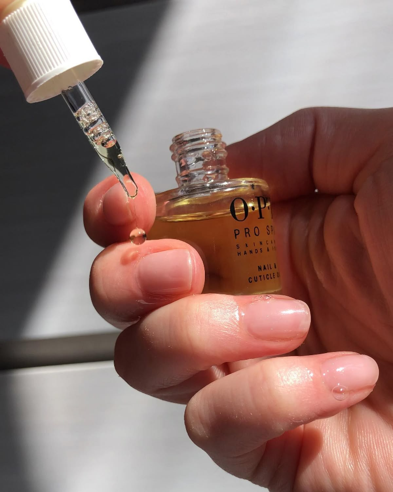
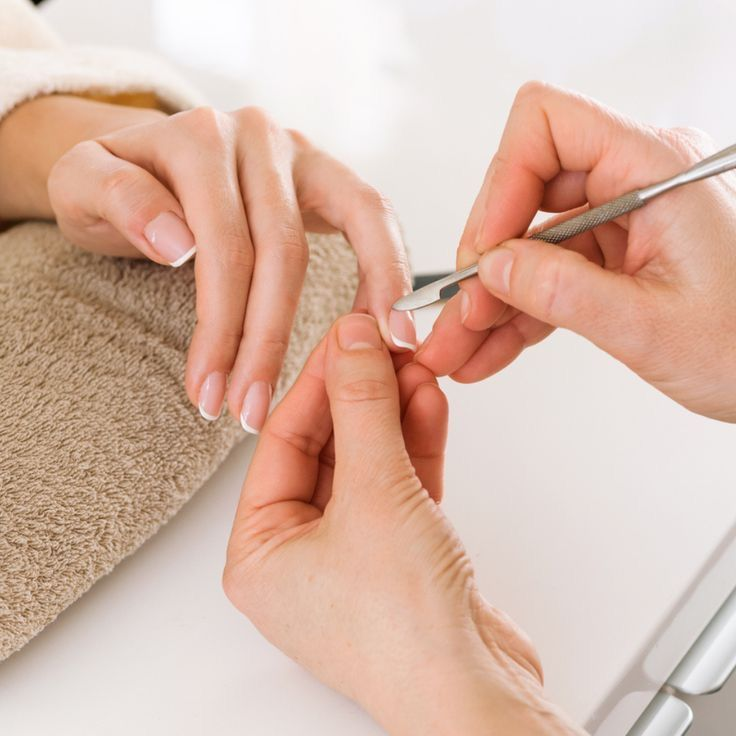
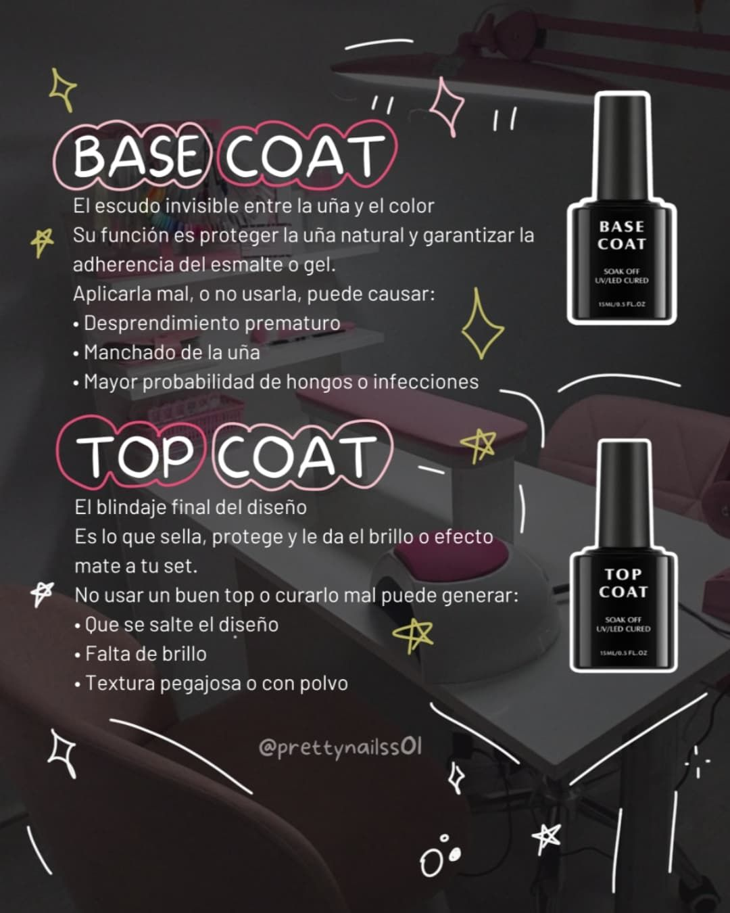

Mantener las uñas sanas es la base de cualquier manicura duradera. En este artículo encontrarás
rutinas sencillas, hábitos y productos clave para mantenerlas fuertes y flexibles sin complicaciones.
1
Hidratación diaria y cuidado de cutículas

Aplicar aceite de cutícula cada noche y crema de manos tras el lavado mantiene la piel alrededor
de la uña flexible y evita roturas. No cortes las cutículas agresivamente; empújalas suavemente
después del baño o ducha para conservar la barrera protectora.
2
Alimentación y soporte interno
Una dieta equilibrada rica en proteínas, vitaminas (A, C, E) y minerales (zinc, hierro) ayuda a
la salud de la placa ungueal. La biotina puede beneficiar a uñas quebradizas; consulta con un
profesional antes de iniciar suplementos.
3
Limpieza, limado y forma adecuada

Limar siempre en una sola dirección con lima de grano medio evita microfisuras. Mantén una
longitud práctica para tu actividad diaria: uñas muy largas son más propensas a romperse.
Pulir con moderación y evitar limados agresivos protege la placa.
4
Productos clave: bases, top coat y aceites

Usa una base fortalecedora para proteger la uña del pigmento y un top coat de buena calidad
para sellar. Los aceites con vitamina E o jojoba reponen humedad. Evita productos con acetona
muy frecuente; usa removedores suaves cuando sea posible.
5
Prevención de daños y mantenimiento regular
Protege las uñas usando guantes para tareas domésticas, limita la exposición prolongada al agua
y permite periodos de descanso entre técnicas fuertes (acrílico/semipermanente). Repara con
atención cualquier levantamiento para evitar filtraciones de agua y bacterias.
Comentarios
Melissa Cubillo
05/10/2025
Este artículo me dio ideas prácticas para mi rutina diaria. Gracias por los consejos.